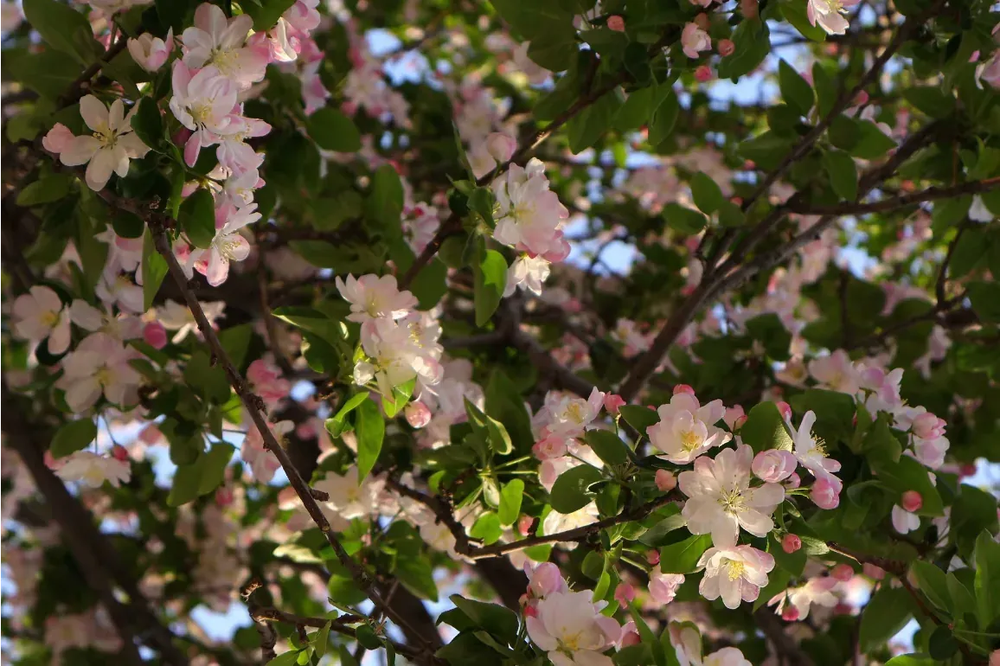
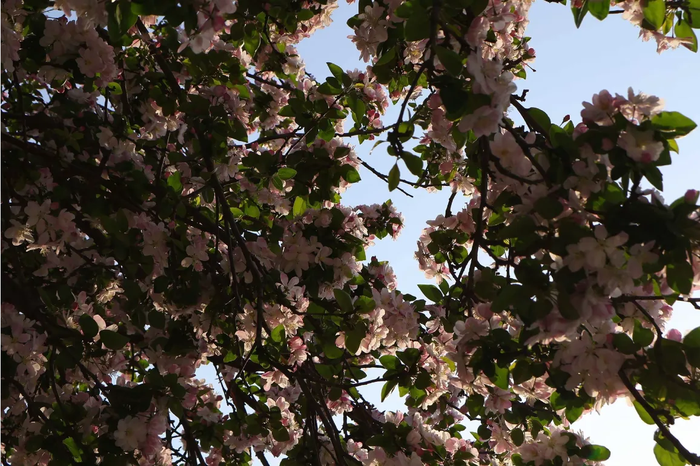
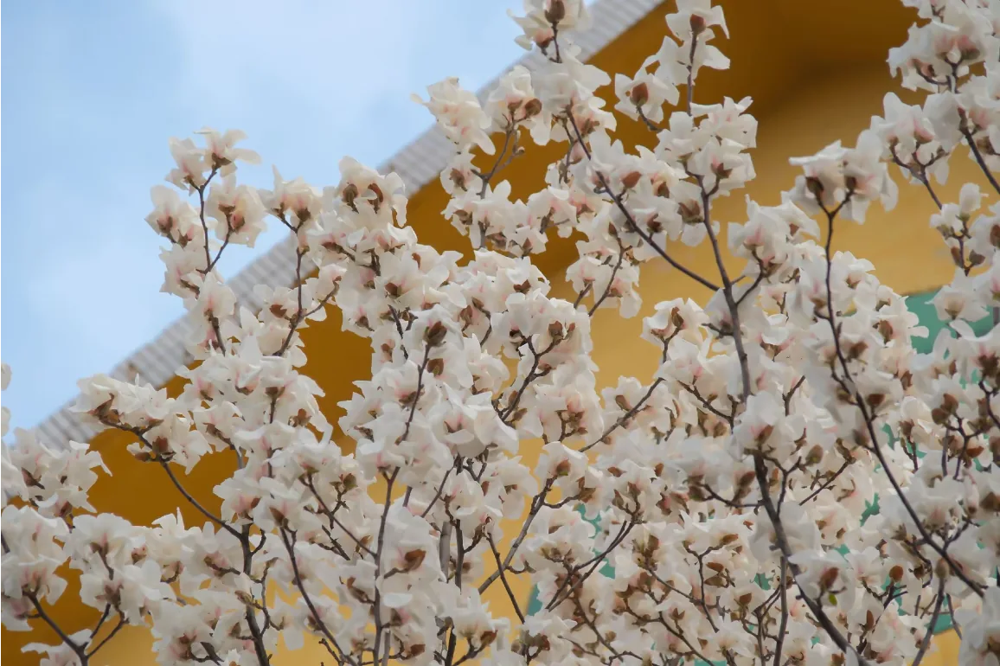
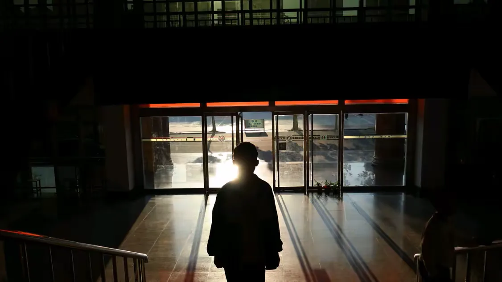

这枝海棠低得像要鞠躬。我按快门时，它真朝我弯了一下。

从下往上看，整个世界都变成了花。脖子酸，但值。

黄墙配白花，是春天里最响亮的一次配色。
谨以此站献给我的挚友 隋北
生日快乐 · 愿光影永伴你行
Selected Works
把光标移到任意照片上，它会被优先点亮。
涵盖人像、自然与城市。按栏目、拍摄年份或标签自由筛选，找到你想看的那束光。
LIGHT · SHADOW · TIME · COLLECTOR
拙于言辞，故所欲言，尽寄快门。一按之间，流光遂为我所属。

隋北，乙酉年生，天秤座。初三初执相机，借友人之机，摄枯树一株，洗出竟自可观，由是溺焉。
继而拍海棠、玉兰、新荷，亦拍松鼠、巨象、稚熊。尝摄夜分玉兰，又遇巷口歪耳之犬。非天才也，特肯守——为一花可伏半时，为一云可立道侧二十分。常言：摄影不可躁，佳光皆有待。此站之设，以赠其人——所候之光，终当有处可栖。
岁 / 刚启程
年快门龄
台机身走天下
不追新，够用就好。下面是陪他走过大多数地方的那几件。
Canon EOS R50
RF-S 18-45mm f/4.5-6.3
RF 50mm f/1.8 STM
LR + 一点点 PS
约拍、易镜、清谈皆可。隋北答书迟，然每信必览。